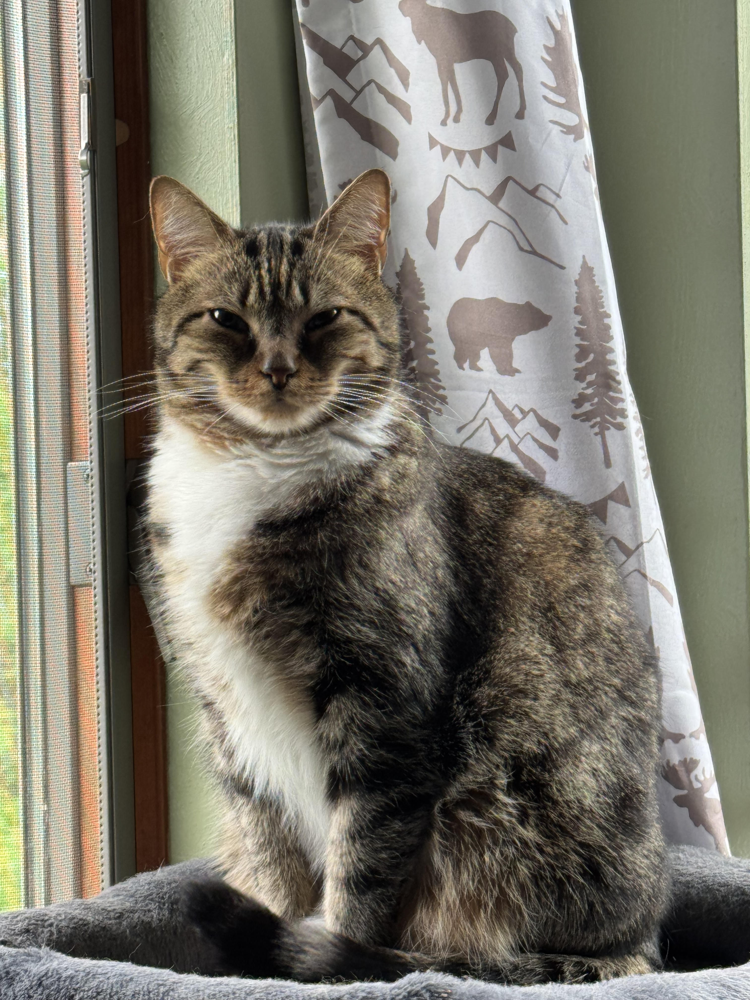
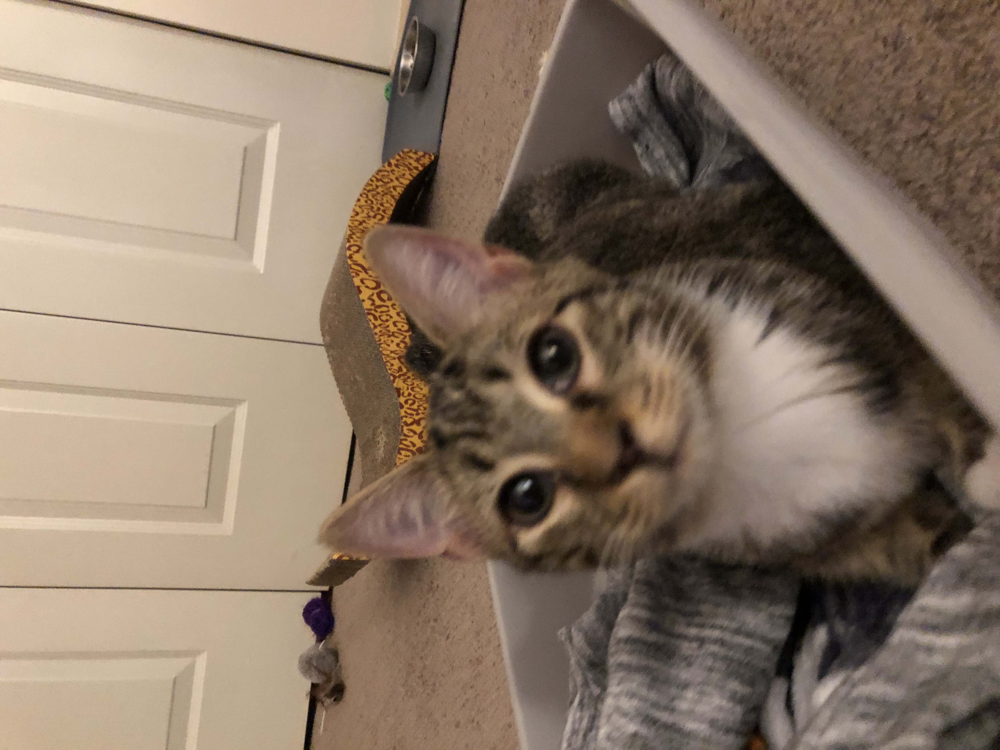
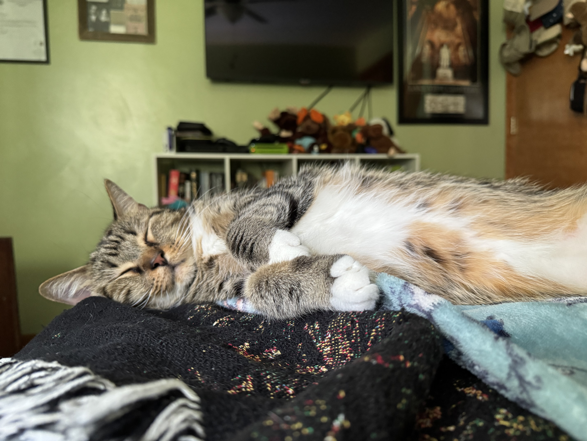

Also fun fact, JoJo was a kitten before (pictured above)! Here's another photo of him as a kitten, it is one of the first photos I got of him at home:

At the peak of Covid, I really wanted a cat. My parents finally caved after 14 years and let me get a cat.
We went to Petland Norwin (when they used to sell rescue dogs) to look at their cats. They just got a new shipment in
from their rescue, but they only had one left. I was told I could only get a female cat because "males spray," but
he was the only one left. I played with him for a bit and knew I had to get him. His name was Axel, and it didn't fit.
I only thought of female cat names, so I didn't know what to name him. I decided to name him after my favorite show,
JoJo's Bizarre Adventure. I had to wait TWO WEEKS to take him home because he still had an eye infection and was in
partial quarantine or something, but in July of 2020, I got to take him home. He still has a leaky/winky eye due to
the eye infection, but other than that he's healthy.

Thank you for perusing my website about my cat! I hope you enjoyed :)
If you are interested in seeing some photos of animals, please click this link.